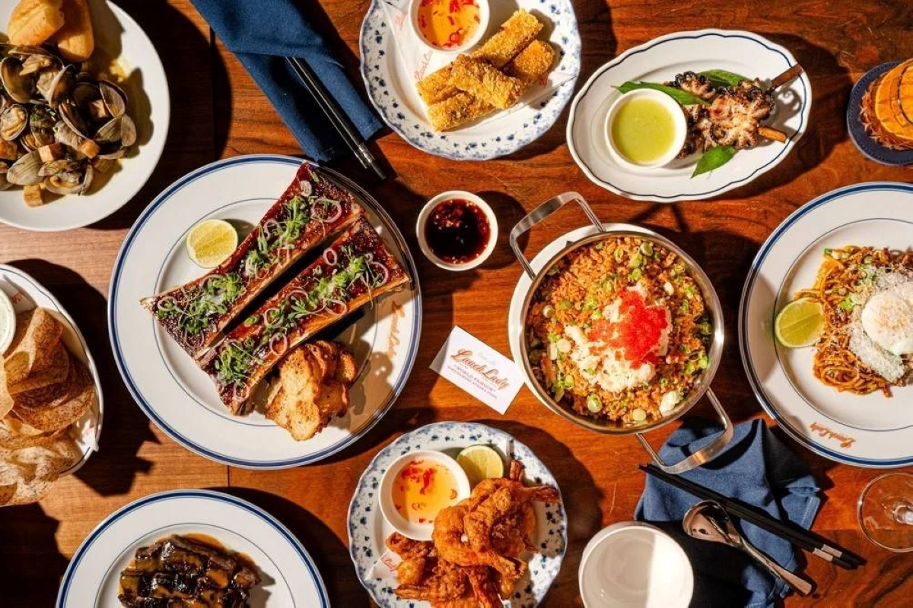

SM plants Laguna's biggest mall inside Ayala's Nuvali on 27 Nov
4 Oct 2026 · Rappler (Vantage Point) · opening date confirmed by GMA News, 1 Sep
SM Prime opens SM Nuvali in Santa Rosa on 27 Nov: over 82,000 sq m of leasable area, a one-hectare indoor garden, and a tenant mix heavily weighted toward dining. Rappler's column calls it the frontline in a four-way fight for the Santa Rosa peso among Ayala, SM, Villar (Vista Malls) and Gokongwei (Robinsons/Shopwise). Ayala Malls Nuvali is expanding past 100,000 sq m, with Phase 1 due in late 2026. The writer's read is that Ayala sold the lot at peak value and gains an anchor that draws more people into its estate. SM targets 100 malls by 2028, with General Trias, Cavite, in the pipeline.
Operator read: this is the catchment next door. A food-led mall with a garden draws families on weekends and pulls them away from standalone restaurants for at least the holiday quarter. Two moves make sense. Defend weekday lunch, which an estate mall serves less well, with the Technopark and office crowd. And treat Nuvali's new supply as leverage when your next lease renewal comes up, wherever it is in the corridor.
Open Rappler · GMA News

Bourdain-famous Lunch Lady opens its first PH branch in BGC
20 Nov 2026 · The Manila Times (newswire)
The Lunch Lady, which grew from the Saigon noodle stall Anthony Bourdain featured in 2009, opened on 4 Nov on Forbestown Road, BGC. The local partner is HTCG Premium Food Concepts (Peter and Annabelle Chua). Manila is the third city after Vancouver and Toronto, where it holds Michelin Bib Gourmand listings. The format: a daily rotating noodle soup, a few staple dishes, a more upscale dinner menu and a full cocktail program, pitched as 80% street-food heritage and 20% modern. Flag: this is a placed newswire feature, so read it as promo.
Operator read: this is a story-led import with a tight core menu. One rotating soup a day keeps the prep list short and gives regulars a reason to come back. Dinner and cocktails raise the check at night. It's also another BGC Vietnamese option, arriving just after Recovery Food closed its last BGC branch, so the area keeps swapping old concepts for imports with a story. In the provinces, the rotating daily special is easy to copy without paying a franchise fee.
Open Manila Times